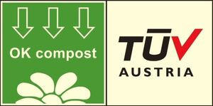

Trade Mark Journal No.2025/050 12 December 2025
WO0000001876994 (1,2,3,5,8,16,17,20,21,22,25)
Office of origin: European Union Intellectual Property Office (EUIPO)
Date of International Registration:20 June 2025
Date of designation in the UK:
20 June 2025

The mark contains the colours Green, red, black and light yellow.
- Class 1
- Liquid fertilizers; additives, chemical, to compost; additives, chemical, to concrete; additives, chemical, to dyes; additives, chemical, to clay; compost [fertiliser]; biodegradable polymer compositions; biodegradable anionic surfactants for use in manufacture; biodegradable detergents for use in manufacturing processes; industrial adhesives; absorbent granules of synthetic materials for liquids; adhesives for industrial use in the form of granules; unprocessed plastic in the form of powder or granules.
- Class 2
- Colorants; colorants, dyes; colorants for textiles; color pigments; ink jet printer ink; color masterbatch.
- Class 3
- Cotton pads for cosmetic purposes; hydrogel facial sheet masks; beauty masks; facial masks; skin masks; cosmetic masks; facial sheet masks for moisturizing dry skins; disposable steam-heated masks, not for medical purposes; sheet masks for cosmetic purposes; sponges impregnated with soaps; pre-moistened cleansing wipes; baby wipes impregnated with cleaning preparations; disposable wipes impregnated with cleansing chemicals or compounds for personal hygiene; disposable wipes impregnated with cleaning chemicals or compounds for industrial and commercial use; dentifrice in the form of chewing gum; chewing gum for whitening teeth; cotton buds for cosmetic purposes; laundry additives.
- Class 5
- Antibacterial wipes; antiseptic wipes; disinfectant wipes; sanitising wipes; sanitizing wipes; adult diapers; babies' diapers; cloth diapers; diapers for dogs; diapers for incontinence; diapers for pets; babies' diaper-pants; babies' nappies [diapers]; babies' swim diapers; cellulose babies' diapers; diaper covers of textile; adult nappies; babies' nappies; cloth nappies; cotton buds for medical purposes.
- Class 8
- Manual clippers; hair clippers for personal use, electric and non-electric; nail clippers, electric or non-electric; hair clippers for animals [hand instruments]; lawn clippers [hand instruments]; cutlery; biodegradable cutlery; compostable cutlery; cutlery for babies; table cutlery [knives, forks and spoons]; grout bags, hand-operated, for the extrusion of cement; tube squeezers, hand-operated, other than for household purposes; compostable forks; compostable knives; compostable spoons, biodegradable forks; biodegradable knives; biodegradable spoons.
- Class 16
- Garbage bags; paper bags; filter paper for tea bags; general purpose plastic bags; paper bags for household purposes; paper sandwich bags; plastic bags for disposable diapers; carrier bags of paper or plastic; plastic or paper bags for merchandise packaging [envelopes, pouches]; wrapping, packaging and storage bags and articles made of paper, cardboard or plastic in relation to packaging, bags, tableware, containers and bottles, including for use in the food sector and related industries; food waste bags of biodegradable plastic for household use; waste bags of biodegradable plastic for household use; food wrapping plastic film; plastic blister packs for wrapping; plastic film for wrapping; baking paper; cardboard hangtags; plastic bags for packaging ice; paper; filter paper; folders for papers; packing paper; shopping bags of paper; pet waste bags of paper; paper-clips; envelopes of paper or plastic for packaging; bibs, sleeved, of paper; cardboard pizza boxes; paper labels; adhesive labels of paper; paper towels; plastic shopping bags; toilet paper; paper toilet rolls; beeswax-based packaging material; coffee filters of paper; cellulose wipes; paper wipes for cleaning; waxed paper; table cloths of paper; paper napkins for household use; decorations of paper being festive decorations; address labels; price labels of cardboard; price labels of paper; shipping labels of paper; paper place mats; place mats of card; place mats of cardboard; babies' bibs of paper; paper baby bibs; paper bibs for babies; holders for adhesive tapes; self-adhesive tapes for stationery or household purposes; film pens; cellulose acetate film for packaging; correction film for type; plastic film for packaging; plastic cling film, adhesive plastic film for wrapping and packaging; biodegradable pet waste bags of plastic; biodegradable paper pulp-based to-go containers for food; paper tissues; packaging material of plastic; merchandise bags of paper or plastic.
- Class 17
- Film for mulching; mulching film; foam supports for flower arrangements [semi-finished products]; biodegradable plastic film for agricultural purposes.
- Class 20
- Covers for clothing [wardrobe]; corks; packaging materials being rigid plastic trays; non-metal bottle caps; plastic labels, biodegradable plastic based containers for commercial packaging in the nature of bottles; biodegradable plastic based containers for commercial packaging in the nature of jars; biodegradable plastic based containers for commercial packaging in the nature of squeeze tubes; adhesive tags of plastic or rubber for bags; plastic trays for foodstuff packaging.
- Class 21
- All-purpose portable household containers; bags for use in cooking; baking dishes; baskets for household purposes; beverage bottles; biodegradable make-up sponges; biodegradable rice straws for drinking; biodegradable tableware, other than knives, forks and spoons; bowls [basins]; boxes for cosmetic utensils; brushes; buckets; scrub sponges for washing dishes; coffee stirrers; cups; cup lids; dental floss picks; dental picks for personal use; kitchen gloves; dishwashing gloves; gloves for household purposes; pots; lollipop sticks; plant pots; spouts; sponges; plates [tableware]; coffee services [tableware]; tea services [tableware]; baby cups and bowls [baby tableware]; tea filters; candle jars [holders]; compostable trays for domestic purposes; ice cube trays; trays for household purposes; paper plates; non-impregnated cleaning wipes other than paper; disposable paper cooking containers; coffee cups; dispensing bottles for cleaning preparations; litter trays for pets; drinking straws; traps for pests; cosmetic bags, fitted; droppers sold empty for cosmetic purposes; bottles; pet feeding bowls; plastic place mats; compost bins for household or kitchen use; compost containers for household or kitchen use; compostable bowls; compostable cups; compostable plates; biodegradable 3D-polycapsule cups.
- Class 22
- Commercial fishing nets.
- Class 25
- Aprons [clothing]; aprons [for wear]; disposable aprons; paper apron; biodegradable clothing; biodegradable garments.
TÜV Österreich (Technischer Überwachungs-Verein Österreich)
Representative: McDaniels Law, Suite 1.01, Northern Design Centre, Abbotts Hill Gateshead NE8 3DF UNITED KINGDOM